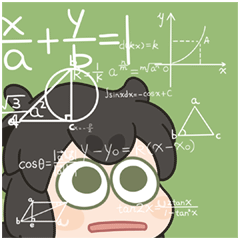

关于我

我目前是华南农业大学电子工程学院电子科学与技术专业的本科生，现于广州学习和生活。
过去一段时间里，我在香港城市大学开展研究实习，也参与了华南农业大学的农业大模型合作研究。我的工作涉及自动竞价、农业视觉、物理推理与临床决策等问题；这些经历让我更加在意模型是否真正理解了所处场景，并能在现实约束下作出有用的判断。
我目前关注 world models、world language models 与 Vision-Language-Action（VLA） 相关问题，尤其希望理解模型如何将对环境的表征转化为长期、可执行的决策。我也正在寻找这一方向的研究实习机会，期待与有相近兴趣的研究者合作。
闲暇时也会看《罗小黑战记》；真心希望它能快点更新。
最新动态
-
🎉 两篇论文被 CIKM 2026 接收！

On the Role of Language Representations in Auto-Bidding: Findings and Implications and ClinSDT: LLM-Encoded Clinical Semantic Guidance for Sepsis Treatment via Decision Transformer.
-
Latent Reward Steering 的 OpenReview 平均分为 3.17，Meta Review 评分为 3；希望最终能够入选 Findings。
-
On the Role of Language Representations in Auto-Bidding: Findings and Implications 已发布于 arXiv。
-
PhysicsMind 已发布于 arXiv。

论文成果
(* equal contribution · † corresponding author)


Latent Reward Steering: An Adaptive Inference-Time Framework that Implicitly Promotes Cognitive Behaviors in Reasoning LLMs

PhysicsMind: Sim and Real Mechanics Benchmarking for Physical Reasoning and Prediction in Foundational VLMs and World Models

Beyond Uniform Alignment: LLM-based Recommendation

Lychee-Bench: A Process-Level Vision Language Benchmark for Trustworthy Lychee Orchard Diagnosis

ClinSDT: LLM-Encoded Clinical Semantic Guidance for Sepsis Treatment via Decision Transformer

科研经历

奖励荣誉
- 国家奖学金（2025）· Top 1%
- 全国大学生集成电路创新创业大赛 · 全国二等奖
- 全国大学生数学建模竞赛（省二等奖）
- 优秀学生干部（2025）
- 学风建设先进个人（2024、2025）